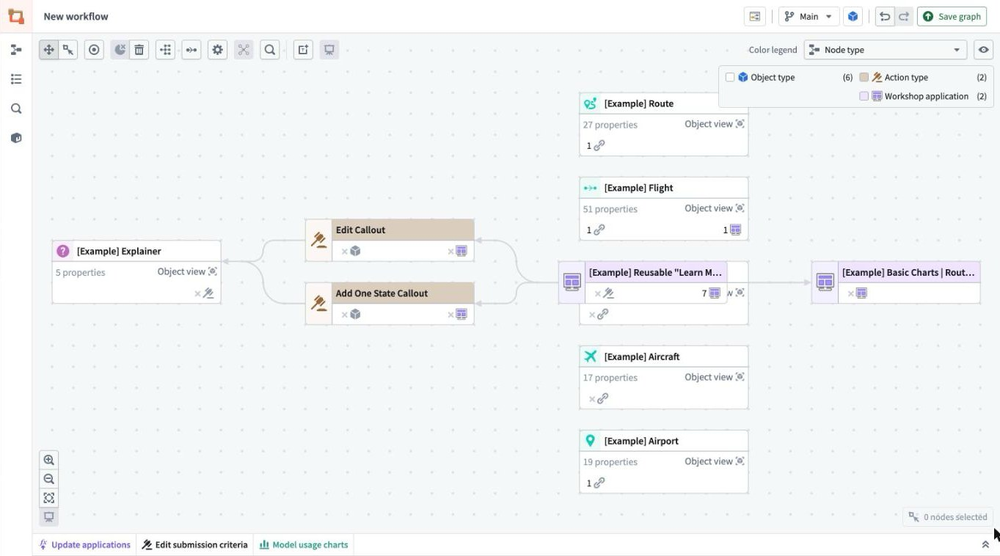
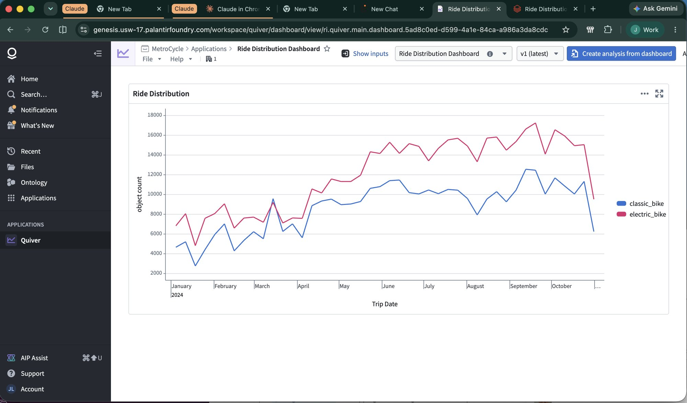
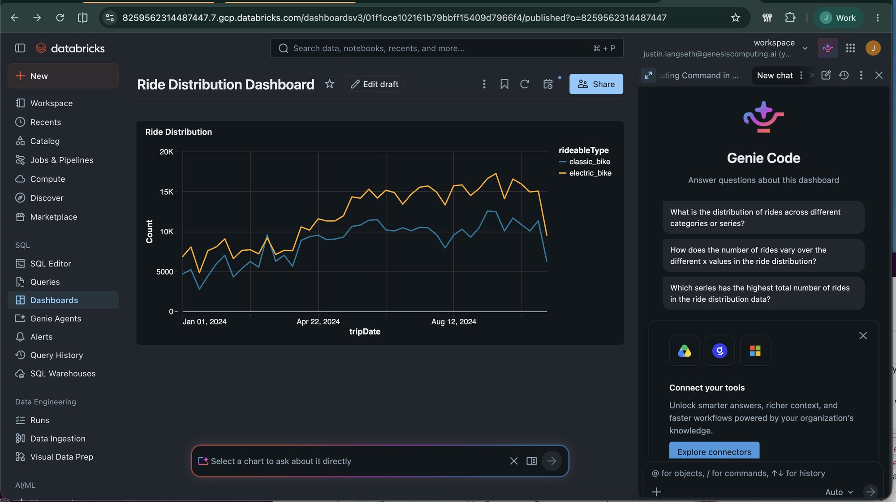

Foundry's Workflow Lineage draws the graph behind a use case: the Workshop apps, the object types they read, the actions that write, and how they connect. Here is that graph for Route Carriers, and where every node lives after Genesis migrated it.

| Foundry node | Databricks / Genesis | Proof |
|---|---|---|
| Basic Charts | Route CarriersWorkshop application | Databricks App route-carriers-v15, plus the Genesis app | 71/72 · 0 failed |
| Reusable "Learn More" OverlayWorkshop application, used by 7 apps | One shared Databricks App, genesis-learn-more-overlay-v9, opened from every app's "How it works" buttons | 0 failed |
| Edit Callout · Add One State CalloutAction types | Save buttons in the app, writing to exampleexplainer__edits as the signed-in user | rehearsed on every proof |
| ExplainerObject type · 5 properties | foundry_ontology.exampleexplainer, with a _current view that merges edits | matched |
| RouteObject type · 27 properties | foundry_ontology.exampleroute (the app reads 5) | matched |
| FlightObject type · 51 properties | foundry_ontology.exampleflight, 1,660,475 rows (the app reads 13) | matched |
| CarrierObject type · 12 properties | foundry_ontology.examplecarrier (the app reads 3) | matched |
| AircraftObject type · 17 properties | foundry_ontology.exampleaircraft (the app reads 9) | matched |
| AirportObject type · 19 properties | foundry_ontology.exampleairport (the app reads 4) | matched |
| Links between object typesLink types (the 🔗 counts) | Join keys between the tables, e.g. flight.routeId = route.routeId | used by matched values |
Catalog foundry_apps_oct15 on the Databricks GCP workspace. Proof figures are from the Prover's latest run at each Databricks App's address.
MetroCycle came from a Foundry Marketplace product: 13 datasets, 2 pipelines, 12 object types, 6 actions, 2 AI functions, 2 Workshop apps and a Quiver dashboard. All of it except the Foundry-hosted images is migrated and proved on Databricks. The Quiver dashboard is now a Databricks AI/BI dashboard, rebuilt by Eve and matching Foundry on all 88 weekly points. Foundry's own Workflow Lineage records no inputs for the MetroCycle module, likely because it was installed from Marketplace, so the graph there shows a single node; the full map has to be rebuilt from the definitions Genesis already reads (phase 1 below).
Quiver publishes object analyses as read-only dashboards; the MetroCycle Financials app opens this one from “Open Ride Distribution Graph”. Eve read its saved definition, rebuilt the card as an AI/BI dashboard over foundry_metrocycle.foundry_app_ontology.mcrides (912,300 rides), and proved it: weekly ride counts per bike type match Foundry on all 88 week × type points. Blueprint foundry_quiver_to_aibi; nothing was hand-built.


Workflow Lineage has no public API, so Genesis rebuilds the graph from Foundry's Ontology API and the Workshop definitions it already reads during a migration, and stores it in the Genesis Context Graph next to the Databricks side.
Object types, properties, links, actions and what they write, functions, AIP Logic, models, Workshop apps and the modules they embed, into the Context Graph.
Eve writes an edge from each Foundry node to its Unity Catalog table, Databricks App or serving endpoint as she migrates it, and to the Prover run that proved it. Never guessed from names.
A Genesis page that looks like Palantir's: node cards with counts and status, a Foundry / Databricks / side-by-side toggle, click-through to Databricks, Foundry and the proof, and "Ask Eve" on any node.
Table and column comments and tags, primary and foreign keys for the links, a Genie space per use case, and external lineage for the apps and actions. Actions, object views and the graph itself have no Databricks equivalent yet, so Genesis keeps the cross-platform record.
Status: Route Carriers' mapping above is real and proved. The automated graph (phases 1–4) is planned, not built.